Design previews on the current app. Splits are illustrative. Saving, Undo and the real edit triggers will be built after agreement.
Open the latest published version, tap its read-only Remarks, then Choose or Change mission role. The answer updates Insights immediately; the programme stays unchanged.
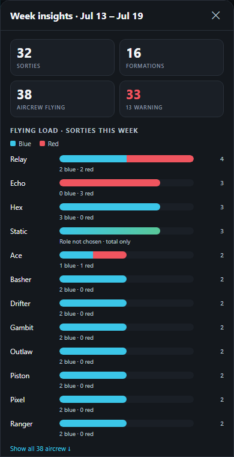
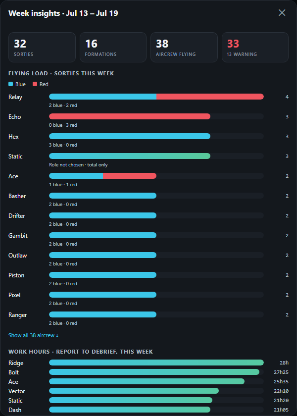
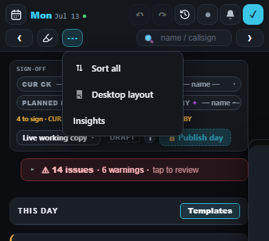
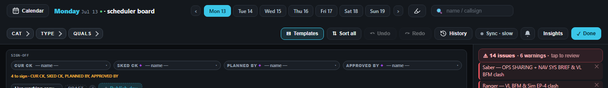
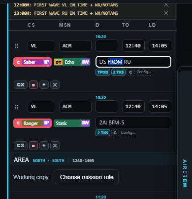
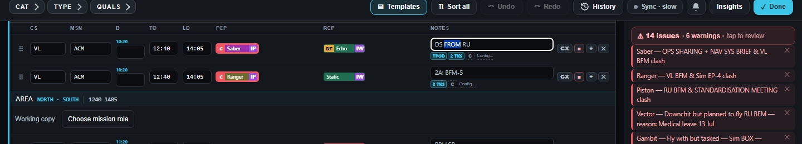
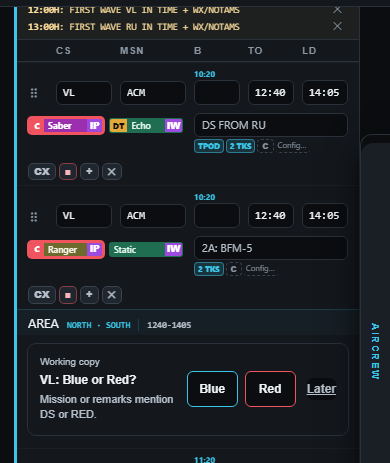
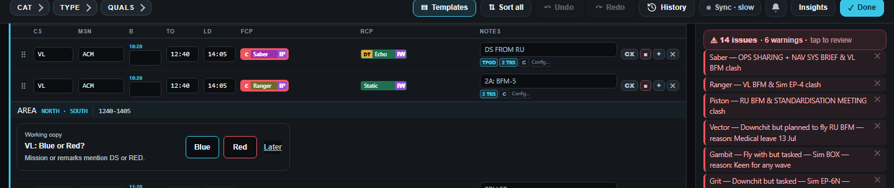
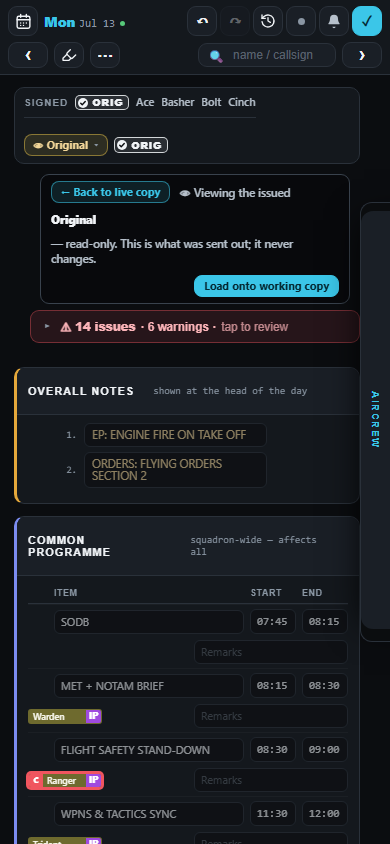
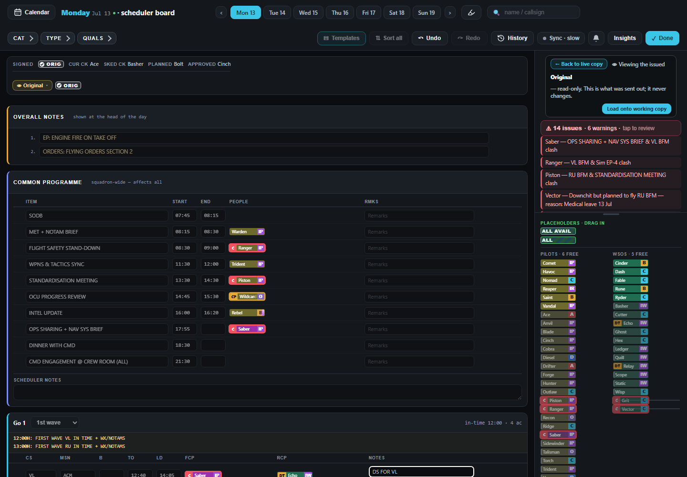
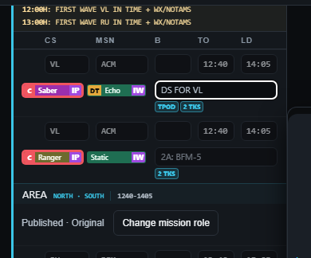
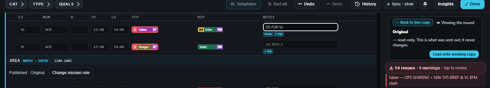
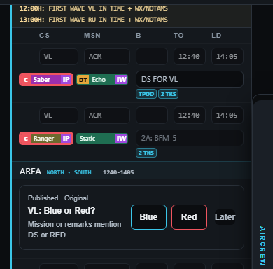
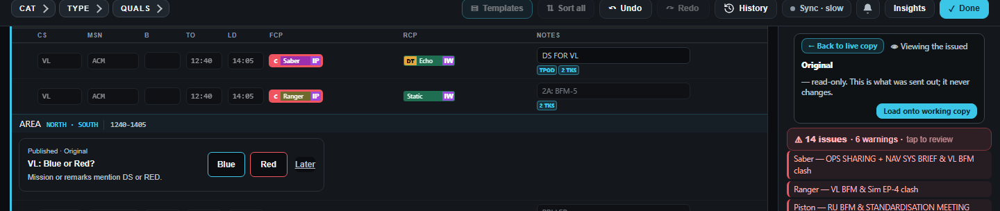
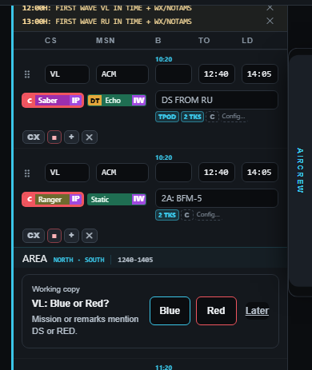
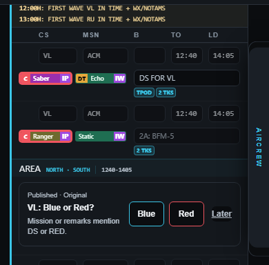